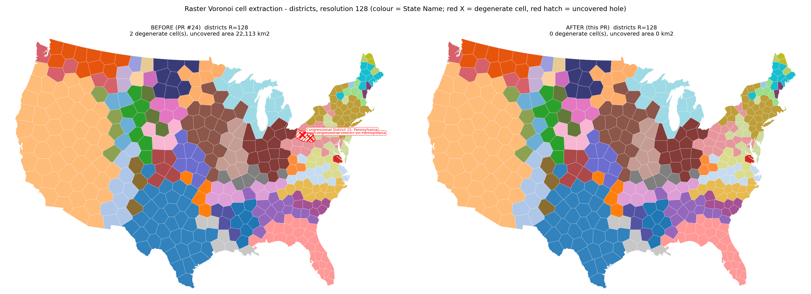
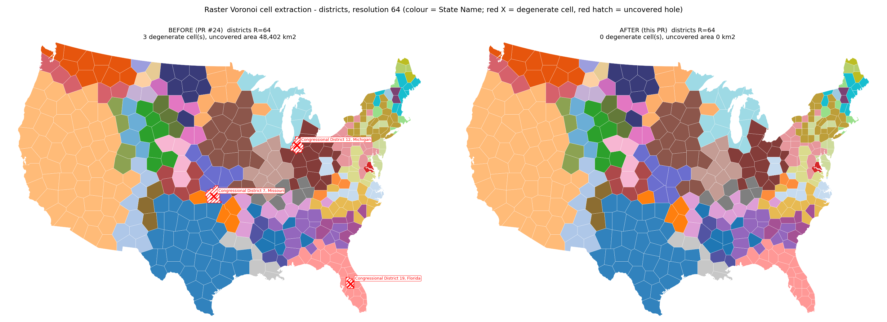
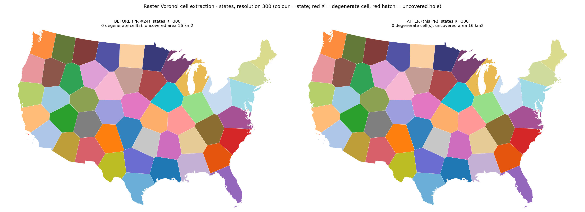

shapely.intersection(cell, boundary) collapsed a valid cell polygon to a zero-area LineString whenever the boundary carried a coordinate-noise-floor spike ring; drop_sliver_holes() removes those rings before clipping.
Branch fix/voronoi-cell-extraction (this PR) vs fix/voronoi-degenerate-cells (PR #24).
Setup: load_us_census(level="congressional_district", population=True) -> simplify_coverage(tolerance=5000, min_island_size=50000) -> RasterBackend(resolution=R), VoronoiOptions(n_iter=30, area_cv_tol=0.1), group_by="State Name"; states: level="state", contiguous_only=True, group_by="Region", R=300.
Each PNG: left = before (PR #24), right = after. Cells coloured by state (tab20+tab20b+tab20c, 49 colours). Red X + label = degenerate cell (Point or area <= 1e-9 x mean cell area). Red hatch = hole in the coverage (input union minus the union of the polygonal cells).
| Figure | Before | After |
|---|---|---|
districts_r64_before_after.png | 3 degenerate (MI CD-12, MO CD-7, FL CD-19), 48,402 km2 uncovered | 0 degenerate, 0 km2 uncovered |
districts_r128_before_after.png | 2 degenerate (PA CD-10, PA CD-15), 22,113 km2 uncovered | 0 degenerate, 0 km2 uncovered |
states_r300_before_after.png | 0 degenerate, 16 km2 uncovered | identical (0 degenerate, 16 km2) |
The 16 km2 of uncovered area on the states run is pre-existing sliver (coverage_simplify rounding along shared edges), unchanged by this PR.
Root cause: the outer boundary (union of the input coverage) carries near-collinear "spike" interior rings with areas at the coordinate noise floor (1e-11 .. 2e-6 m2). GEOS intersection(cell, boundary) collapses a cell that contains such a ring to a zero-area LineString even though boundary.covers(cell) is True. drop_sliver_holes() removes those rings before any clipping.

Districts at R=128: 2 degenerate cells and 22,113 km2 uncovered before, 0 and 0 after.

Districts at R=64: 3 degenerate cells and 48,402 km2 uncovered before, 0 and 0 after.

States at R=300: 0 degenerate cells and 16 km2 uncovered before and after (pre-existing sliver, unrelated to this fix).